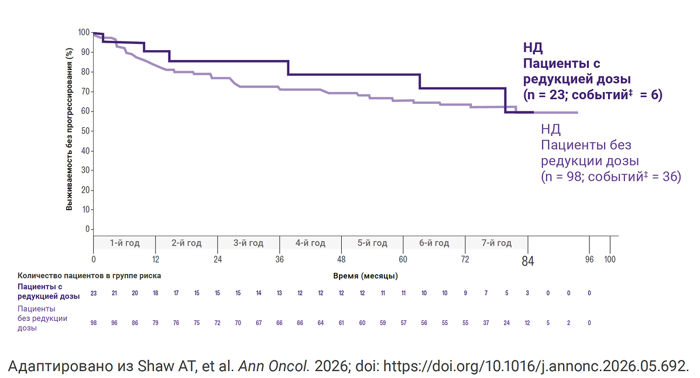
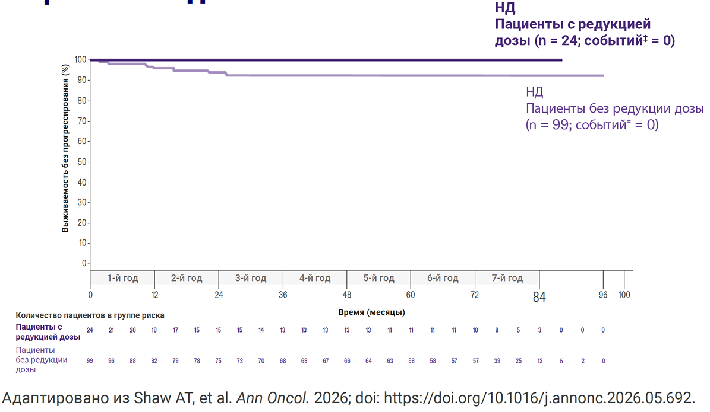

Редукция дозы
Большинство нежелательных явления на терапии ЛОРВИКВА® эффективно контролировались с помощью коррекции дозы1
Снижение дозы было использовано для купирования НЯ примерно у одной трети пациентов2,*
Снижение дозы не влияло на общую и интракраниальную эффективность2
В результате снижения дозы около 75% НЯ либо разрешились, либо частично разрешились после снижения дозы на 1 или 2 уровня3
Только 5% пациентов прекратили лечение препаратом ЛОРВИКВА® в связи с НЯ, связанными с проводимой терапией2
Дата прекращения сбора данных: 31 октября 2025 г.2
На основании данных 84-месячного последующего наблюдения за 149 пациентами,
принимавшими препарат ЛОРВИКВА® в дозе 100 мг один раз в сутки в исследовании III фазы
CROWN2
По данным обновлённого анализа с периодом наблюдения 60 месяцев4
Выживаемость без прогрессирования у пациентов со снижением дозы в течение первых 26 недель2

Время до прогрессирования в ЦНС у пациентов со снижением дозы в течение первых 26 недель2

В ходе постспециализированного анализа, проведенного через 7 лет, снижение дозы в течение первых 26 недель не выявило разницы в ПЗШ или времени до внутричерепного прогрессирования2.
В отдельной модели не было выявлено различий в ПЗШ или времени до внутричерепного прогрессирования по 3 уровням дозы (100 мг, 75 мг и 50 мг)2,†
Дата прекращения сбора данных: 31 октября 2025 г.2
На основании данных 84-месячного последующего наблюдения за 149 пациентами,
принимавшими препарат ЛОРВИКВА® в дозе 100 мг один раз в сутки в исследовании III фазы
CROWN2
† Согласно многопеременной модели пропорциональных рисков Кокса, дополнительно
поддерживающей этапный анализ2
‡ Событие определяется как прогрессирование заболевания или смерть
НЯ – нежелательные явления; ДИ – доверительный интервал; ЦНС – центральная нервная система; ОР – отношение рисков; ИК – интракраниальный; ITT – популяция всех рандомизированных пациентов согласно назначенному лечению; НД – не достигнуто; ВБП – выживаемость без прогрессирования заболевания; ИК ВДП – время до интракраниального прогрессирования.
Список источников:
1. Liu G, et al. Oncologist. 2025;30(10):oyaf287.
2. Shaw AT, et al. Ann Oncol. 2026; doi:
https://doi.org/10.1016/j.annonc.2026.05.692.
3. Liu G, et al. Представлено на ASCO 2025; 30 мая-3 июня 2025; Чикаго, IL.